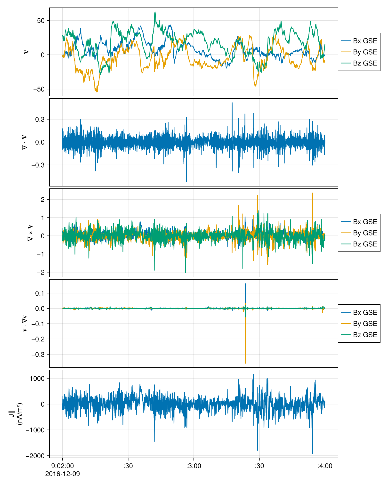

MMS example and validation with PySPEDAS
Current density from the four MMS spacecraft: burst-mode FGM fields, whose timestamps differ between spacecraft, and MEC positions at a lower cadence.
using MultiSpacecraftAnalysis
using TimeseriesUtilities: mapsamples
using CDAWeb: CDAWeb, getdata
using DimensionalData, Dates
using CairoMakie, SpacePhysicsMakie
t0 = DateTime("2016-12-09T09:02")
t1 = DateTime("2016-12-09T09:04")
load(dataset, var) = DimArray(getdata(CDAWeb.Dataset(dataset)[var], t0, t1))
# FGM data comes with the magnitude as a fourth component
fields = ntuple(i -> load("MMS$(i)_FGM_BRST_L2", "mms$(i)_fgm_b_gse_brst_l2")[X(1:3)], 4)
positions = ntuple(i -> load("MMS$(i)_MEC_BRST_L2_EPHT89D", "mms$(i)_mec_r_gse"), 4)
out = tlingradest(fields, positions)┌ 3×15358×3 DimStack ┐
├────────────────────┴─────────────────────────────────────────────────── dims ┐
↓ X Categorical{String} ["Bx GSE", …, "Bz GSE"] Unordered,
→ Ti Sampled{CommonDataFormat.TT2000} [2016-12-09T09:02:00.010743014, …, 2016-12-09T09:03:59.989034162] ForwardOrdered Irregular Points,
↗ ∂ Categorical{String} ["Bx GSE", …, "Bz GSE"] ForwardOrdered
├────────────────────────────────────────────────────────────────────── layers ┤
:rbar eltype: Float64 dims: X, Ti size: 3×15358
:vbar eltype: Float32 dims: X, Ti size: 3×15358
:vmag eltype: Float32 dims: Ti size: 15358
:grad eltype: Float64 dims: ∂, X, Ti size: 3×3×15358
:div eltype: Float64 dims: Ti size: 15358
:curl eltype: Float64 dims: X, Ti size: 3×15358
:curv eltype: Float64 dims: X, Ti size: 3×15358
:rc eltype: Float64 dims: Ti size: 15358
└──────────────────────────────────────────────────────────────────────────────┘using LinearAlgebra
using Unitful
unitify(x, unit) = x isa Quantity ? x : x * unit
# Current density along 𝐁, from 𝐁 and ∇ × 𝐁 = μ₀𝐉
function jparallel(𝐁, curl𝐁)
𝐁 = unitify.(𝐁, u"nT")
curl𝐁 = unitify.(curl𝐁, u"nT/km")
return dot(curl𝐁, 𝐁) / norm(𝐁) / Unitful.μ0 |> u"nA/m^2"
end
jp = mapsamples(jparallel, out.vbar, out.curl)
jp = DimensionalData.rebuild(jp; name = :jpar, metadata = Dict(:ylabel => "J∥\n(nA/m²)"))
tplot((out.vbar, out.div, out.curl, out.curv, jp))
Validation with PySPEDAS
using PySPEDAS
using PythonCall
using Test
@py import pyspedas.projects.mms: mec, fgm, curlometer, lingradest as py_lingradest
trange = string.([t0, t1])
fgm_vars = @py fgm(probe=[1, 2, 3, 4], trange=trange, data_rate="brst", time_clip=true, varformat="*_gse_*")
mec_vars = @py mec(probe=[1, 2, 3, 4], trange=trange, data_rate="brst", time_clip=true, varformat="*_r_gse")
posits_py = ["mms$(i)_mec_r_gse" for i in 1:4]
fields_py = ["mms$(i)_fgm_b_gse_brst_l2" for i in 1:4]
curlometer(fields=fields_py, positions=posits_py)
jp_py = PySPEDAS.get_data("jpar")
# pyspedas interpolates over the full range and leaves NaN at both ends; `tlingradest` clips to the common range
@test ustrip.(u"nA/m^2", parent(jp)) ≈ 1e9 .* vec(jp_py)[2:end-1] rtol=1e-4Test PassedBenchmark
using Chairmarks
@b tlingradest($fields, $positions), py_lingradest(fields=$fields_py, positions=$posits_py), curlometer(fields=$fields_py, positions=$posits_py)(4.535 ms (237 allocs: 7.153 MiB), 2.235 s (97 allocs: 1.562 KiB), 4.478 s (101 allocs: 2.188 KiB))